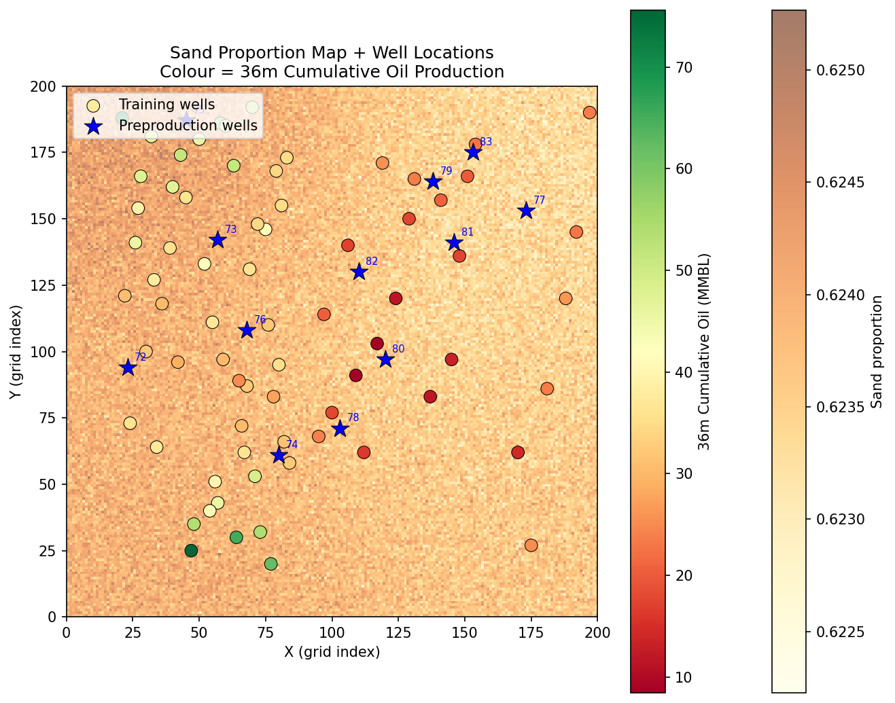
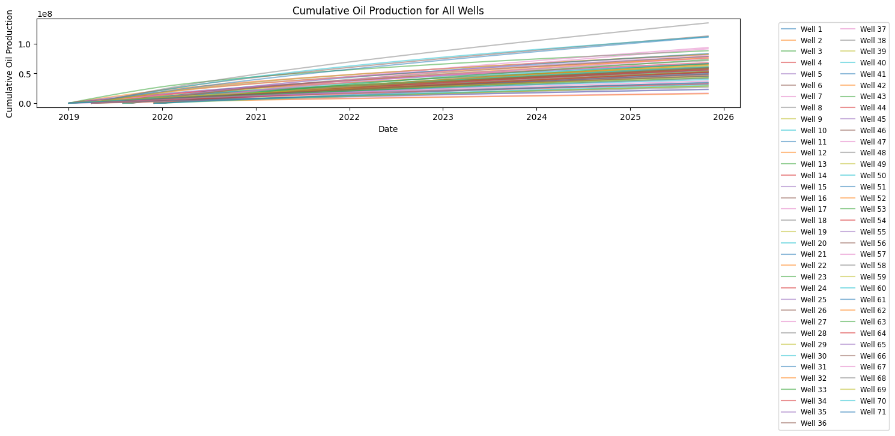
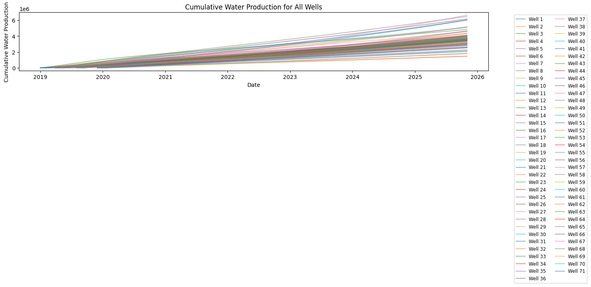
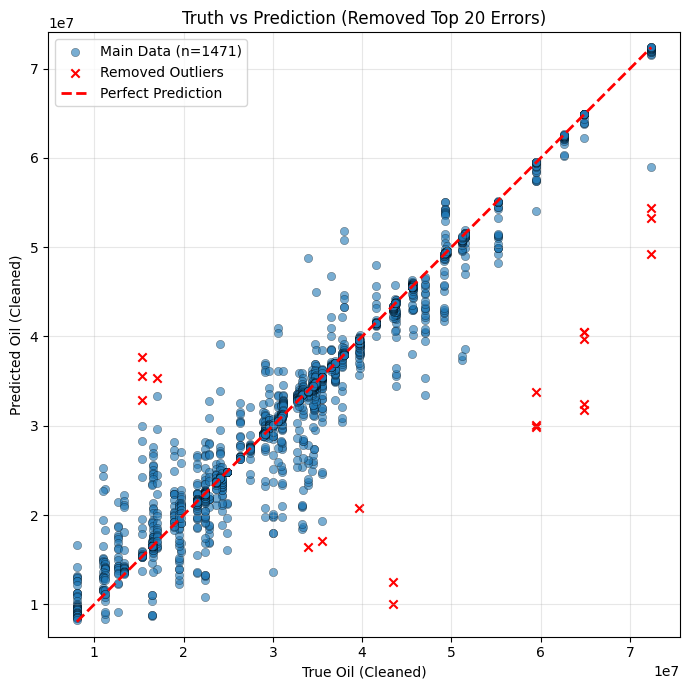
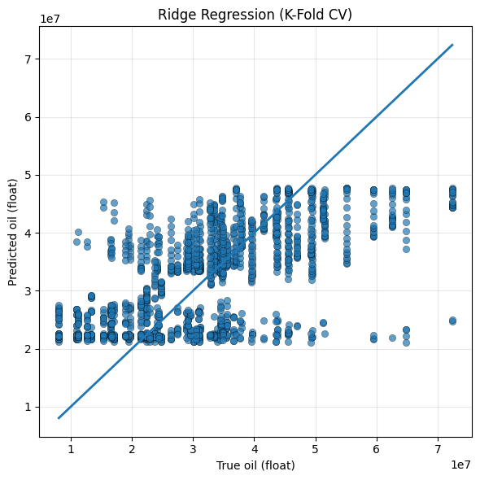

Predict 3-year cumulative oil production for 12 preproduction wells using only well-log measurements and a 2D sand proportion map — no production history available for target wells. The model was trained on 71 production wells with known outcomes and used GroupKFold cross-validation to prevent well-level data leakage. Deliverable: 100 Monte Carlo realizations per well for uncertainty quantification.





Point estimate (median of 100 realizations) of 3-year cumulative oil production in barrels (BBL).
| WELL ID | PREDICTED 3-YR CUM. OIL (BBL) | FORMATTED | REALIZATIONS |
|---|